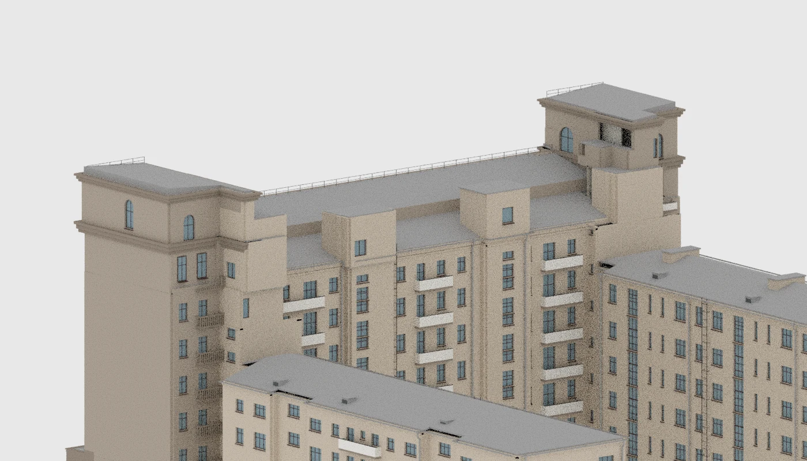

В режиме «Конструктив» видны наружные и внутренние стены, плиты и лестничные марши. Наружные стены полупрозрачны. Выберите этаж или включите горизонтальное сечение Z, чтобы открыть план.
В режиме «Системы» на фоне прозрачных фасадов видны водостоки, наружные лестницы и входные элементы. Коснитесь детали, чтобы увидеть её название и источник, если он указан.
Для перемещения вида используйте два пальца или Shift с перетаскиванием мышью. Сечения работают совместно. Разворот плоскости меняет сохраняемую сторону.
Часть внутренних стен и дверей восстановлена по условным знакам. Фундаменты короткого крыла Б восстановлены по монтажному листу № 5, два участка уличного корпуса А — по поперечному разрезу. Архивные оси и современный контур расходятся. Фундаменты длинного крыла, низкой пристройки и внутренние опоры А требуют подтверждения. Балки, армирование, слои стен и пироги перекрытий отдельно не смоделированы. Их состав проверяют по рабочим чертежам.